High Level Data Structures
This lesson looks at the topic of data structures, which is concerned with the various ways that data can be organized within a computer program. Specifically, four common “high level” data structures are introduced: lists, stacks, queues, and trees. Each of these structures represents a way to organize data so that it may be applied to solve certain problems in an efficient manner. Three of these structures (lists, stacks, and queues) are linear in nature. That is, their items logically exist one after another in sequential order. The tree structure is non-sequential, in that its contents can not be meaningfully represented by a simple sequential listing.
Lists
When designing algorithms to solve computing problems, it is rare that we do not, to some degree, store and manipulate data. Often, we need to store data in a list form. This has been observed in previous lessons (e.g., searching a list for some value, sorting a list using the insertion sort, etc). In fact, we have seen (and used) lists in Scratch and in Python to solve problems.
In general, a list groups values together in such a way that there is a first item in the list, a last item in the list, and some number of items in the middle of the list. Accessing any individual item in the list is permitted (using its position or index). There are generally two implementations of lists: array-based lists and linked lists.
We have already seen arrays in a previous lesson; however, let’s briefly review. Arrays are comparable to a numbered list such as a grocery list, a class roster, or a set of numbered drawers. They are used to store multiple instances of anything, as long as they are all of the same kind (i.e., all numbers, all letters, all images, all books, etc). Imagine these things being in some sort of order (i.e., we have a first thing, a last thing, and some number of things in between). The members of (or entries in) the array are called elements.
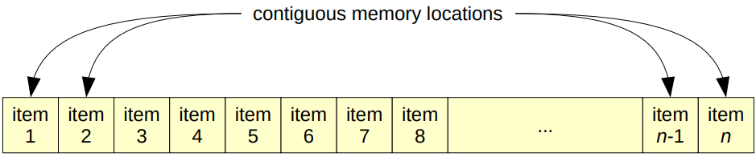
The order in which elements are stored in an array is important. This is because very often a programmer needs to access a specific element of an array, and in order to do that, its position relative to the first element of the array must be known. The position of an element is also referred to as its address, and the relative address (how far away from the first element it is) is called its index.
Again, the distinction between a value and its index is one that must be emphasized. A value refers to a piece of data stored in the array, and its index is the position in the array where that value is stored. The index represents where an element is, and the value represents what the element is. While the two are related, each of them will be of different importance to us depending on the scenario we are trying to solve.
In most programming languages, arrays must be declared along with their capacity (i.e., the maximum number of values that the array can contain). This is important because array elements are located in contiguous memory locations (i.e., next to each other in memory). Therefore, an array’s capacity is required in order to properly allocate all of the contiguous memory locations needed. This does, however, represent the array’s weakness. If we know how many items we will store in the array, then this is simple. But what if we don’t? We may purposely overestimate, but this wastes memory. What if we underestimate and fill the array? The cost of creating a new, larger array, and then duplicating the existing array to this new array can be quite large. The need for specifying an array’s capacity at declaration time is what motivated a tweak on implementing lists in programming languages. The result is the linked list.
Unlike arrays, linked lists can grow or shrink as needed. Individual elements in a linked list are not necessarily stored in contiguous memory locations. The cost of this benefit is that some mechanism for linking each element in the list must exist. Ultimately, this mechanism requires additional memory; thus, linked lists require more space in memory than arrays do when storing the same data. However, this is offset by the convenience of only storing what is needed in the list at any one time.
Since the elements in a linked list are not necessarily stored in contiguous memory locations, we must somehow link the elements in the list to one another. This requires extending the concept of element to include two components: actual data (i.e., some value) and a link (sometimes called “next” in code) to the next element in the list. This extended definition makes up what is called a node. Linked lists are made up of nodes, each of which stores data and a link to the next node in the linked list:
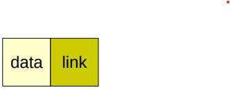
If each node in the list contains some data and a link to the next node, then we really only need to know the location of the first node in order to process each element in the list. From the first node, we can repeatedly following links to the next node, until the end of the list is reached:
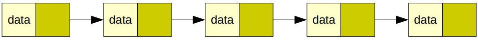
Of course, it does not necessarily have to look so pretty. The linked list above is drawn so that each element seems to be located in contiguous memory locations; however, we could just as easily have drawn the linked list like this:
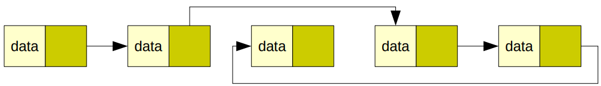
In this case, the first node is still the one all the way to the left. The last node, however, is now the third from the left.
The first node in a linked list is known as its head. Knowing where the head is in a linked list is crucial.
So how do we know when to stop when, for example, we process each element in the list? That is, how do we know when we are at the last element in the list? The answer lies in the link component of the node. For clarity, you should know that the last node in a linked list is known as the tail. The link component of the tail of a linked list will always be nothing. In Python, we would say that its value would be equal to None. In other programming languages, we sometimes refer to this as null. For simplicity, the link component of the tail node is equivalent to 0.
So what does the link component of a node other than the tail actually store? It stores the memory address of the next node in the list! Perhaps this is best explained by creating a linked list, step-by-step, and showing what happens at each step. Let’s insert the values 5, 9, 2, 6, and 1 into a linked list. Inserting the value 5 first requires creating a new node with 5 as the data component and 0 as the link component (by default):
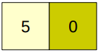
Of course, this node must be stored somewhere in memory. Let’s randomly pick the memory address 5B44 (in hexadecimal). In addition, since this is the only node in the linked list so far, then it is at its head:
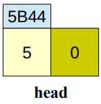
Suppose that inserting the value 9 creates a new node that is stored at memory address 5B46:
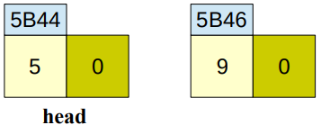
The nodes must now be linked. Since this new node belongs after the head of the list (i.e., it is the second node inserted into the list), then we simply need to link the head to this new node as follows:
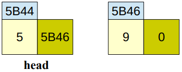
Notice how the link component of the head contains the memory address of the next node in the list. This has the same effect as the following pictorial example:
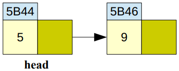
Since we know where the head of the linked list is located (by definition), then we can reach the second node by following the link (i.e., by moving the to memory address specified in the link component of the node).
Inserting the value 2 is similar. Suppose that the new node containing this value is stored at memory address 5B50:
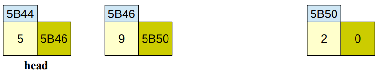
Notice how the link component of the node containing the value 9 correctly links it to the newly inserted node. Now let’s insert the value 6. Suppose that the new node is stored at memory address 5B52:
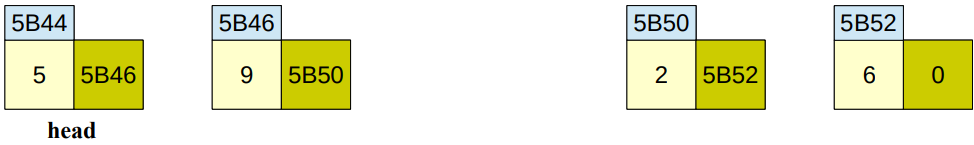
Finally, let’s insert the value 1. Suppose that the new node is stored at memory address 5B48:
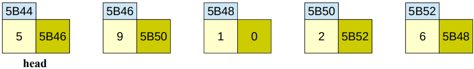
Notice how we can start at the head of the linked list and follow the link components of each node, all the way through the tail. We know to stop at the tail because its link component is 0. Pictorially, this can be represented as follows:
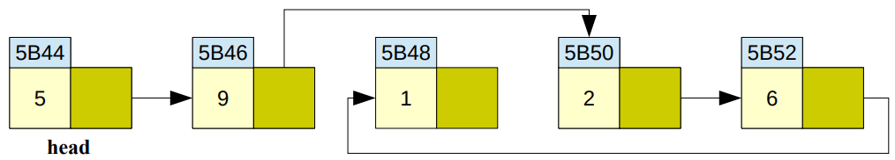
Just like arrays, linked lists can be used to implement searching and sorting algorithms. Processing each element is just as simple. Moving elements around, however, is a bit more complicated since it involves rearranging the link components of nodes to reflect a potentially new ordering of the elements in the list. For example, consider the problem of deleting the node containing the value 2:
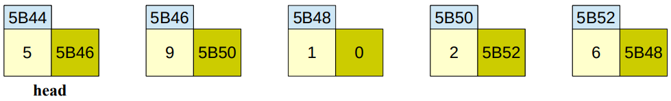
Starting at the head, we see that the node containing the value 2 is the third node in the list. To remove this node, we will need to change the node containing the value 9 (since it is linked to the node that we wish to delete). The solution is to change the link component of this node so that it is equivalent to the link component of the node that we wish to delete:
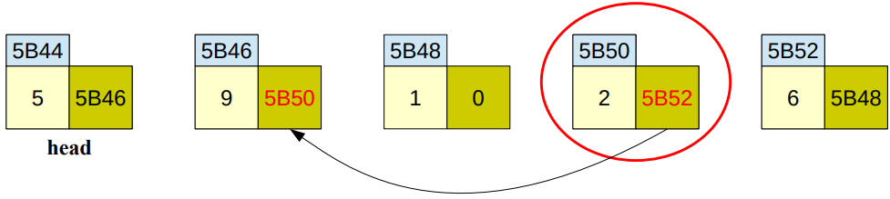
The node to be deleted is circled in red above. To remove it from the linked list, we simply need to copy its link component to the node that precedes it, thereby rerouting around it. After this action, the result is the following linked list (the grayed out node is no longer a part of the linked list): 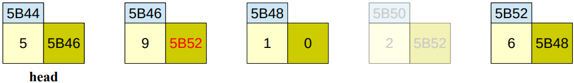
Here is a recap of terminology associated with a linked list:
| Term | Definition |
|---|---|
| Node | An element of a linked list that contains data and a link |
| Data | The value held within the node |
| Link | A way to reference the next node in the linked list |
| Head | Always refers to the first node |
| Tail | Always refers to the last node |
| Traversal | Visiting all nodes from head to tail (can be used, for example, to print all data in the list) |
Stacks
Stack data structures are used, among other things, to model the behavior of stacks of real-world objects. In order to understand this structure let’s begin by thinking about a simple stack of blocks:
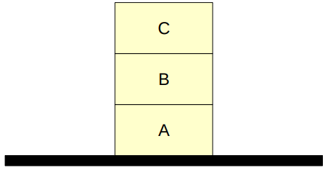
In this stack, C is the top block, B is beneath C, and A is the bottom block. Assuming that the blocks were added one at a time, how must this stack have been built? First, the bottom block, A, must have been set, then B would have been placed on top of A, and finally C would have been placed on top of B. Note that the blocks must be added to the stack from bottom to top: A, then B, then C. The last block placed on the stack will be the top block.
Now, let’s think about removing a block from the stack. As any child could demonstrate, the block that is most easily accessible is the top block (C in this case). Removing C from the stack leaves us with B sitting on top of A. It is interesting to note that the first item to be removed from the stack, C, was the last item added to the stack (remember the order in which the blocks were added). In fact, assuming that you don’t cheat and grab an item from the middle of the stack, the last item added on the stack would always be the first taken off. For this reason, stacks are known as Last-In, First-Out (LIFO) data structures.
As mentioned earlier, the stack data structure models the behavior of real-world stacks of objects. The two primary operations that can be applied to stack data structures are push and pop. The push operator is used to add a new item onto the top of the stack. The pop operator is used to remove the top item from the stack. Stack data structures do not support the removal of items from the middle of the stack. The stack of real-world blocks shown above could be modeled by applying the following operations to an initially empty stack data structure:
push A
push B
push CThe removal of C could subsequently be accomplished by issuing the pop command:
popTo be more formal, the stack data structure can be defined as a specialized type of list (an ordered sequence of items) in which all insertions to and deletions from the list take place at one end. The end of the list where the insertions and deletions are performed is known as the top of the stack. Stacks are usually drawn vertically, so that the item at top of the stack appears literally as the topmost item in the structure; however, they could just as easily be drawn sideways or upside down.
In order to ensure that you have a clear understanding of the behavior of the stack data structure, consider the following sequence of stack operations and pictorial representations of the stack that would result after each operation is applied. Note again that the pop operation always removes the last item placed on the top of the stack:
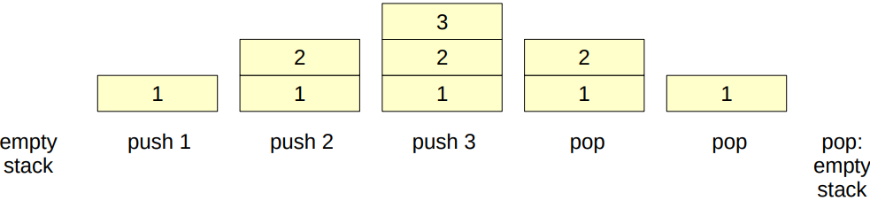
Now that you have some understanding of how stacks behave, it is natural to ask, “So what?” Why are stacks of interest to computer scientists? In the real world, we routinely encounter stacks of objects (e.g., CDs, dishes, bills). We use these stacks to temporarily hold objects until we are ready to use or process them in some way. One important characteristic of all stacks (both the real-world type and their software counterpart) is that, due to their LIFO nature, they reverse the order of the objects they hold. For example, if you place three CDs in a stack, AC/DC, then Iron Maiden, then Justin Bieber, and then play the top one, you will unfortunately be listening to Justin Bieber and not AC/DC. In everyday life, we tend to use stacks in situations where order is unimportant (e.g., for holding identical, non-perishable items like dinner plates).
In a similar manner, stack data structures are used by computer software to temporarily hold data objects until they can be processed by the computer. However, instead of deemphasizing the LIFO nature of stacks, in computing stacks tend to be used almost exclusively in situations where we specifically want to process items in the opposite order than they were added to the structure.
One common use of stacks in computing is to manage the execution of interruptible tasks. The utility of stacks for this purpose can easily be seen by a real-world analogy. Say that you are typing an English paper (task one) and the phone rings. You pick up the phone (i.e., place task one on the stack of on hold processes) and begin a conversation with a friend (task two). During this conversation you get a second phone call, so you put your friend on hold (i.e., place task two on the stack of on hold processes) and take a call from your mom (task three). After a brief talk with mom, you switch back to your friend (i.e., after task three completes, you pop task two off of the stack of on hold processes and restart it from the point you left off). Finally, after a not-so-brief conversation with your friend, you return to your English paper (i.e., after task two completes, you pop task one off of the stack of on hold processes and restart it where you left off).
Note that in order to handle these interruptible tasks properly, a data structure such as a stack that incorporates LIFO behavior must be employed.
Try your hand at pushing the letters of the word PUPILS, one letter at a time, to a stack.
Now pop each letter off of the stack, one at a time. While doing so, record each popped letter to see the word formed after the pop operations are complete and the stack is empty again.
As you can see, a stack can easily reverse a word. We can also use a stack to match parentheses in, for example, mathematical expressions. The basic idea is to scan through an expression, one character at a time, from left-to-right. Left (or open) parentheses are pushed on the stack. Right (or close) parentheses result in a pop (and a match of the left parenthesis that was just popped). Operators and operands are ignored.
Take a look at the following expression and its resulting stack operations. To make it easier to follow, we’ll change the orientation of the stack so that the top is to the right:
a + b * (c + (d - e) / (f / g))
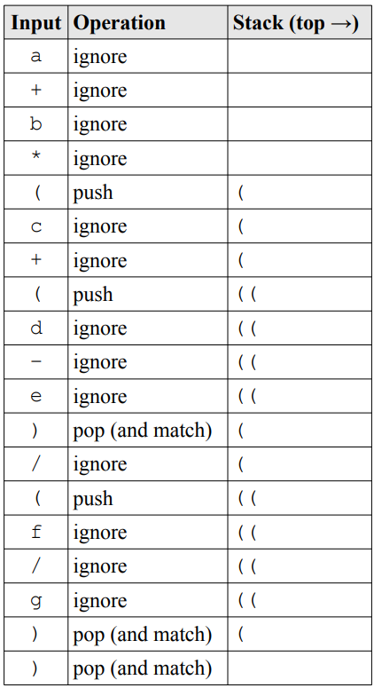
So long as the stack is empty at the end, all parentheses have been matched. Create the table for the following expression:
(a + (b - c)
An error arises because the expression has been processed, but there is still an open parenthesis on the stack. Now create the table for the following expression:
(a + b))
Another error arises because there is a close parenthesis left to process, but there is no matching open parenthesis on the stack (it is empty).
Queues
In America, a waiting line (such as the kind you encounter at a bank or supermarket), is simply referred to as a line. In England and many other countries, a waiting line is called a queue (pronounced like the letter Q). The following illustrates a real-world queue that you might encounter at a local movie theater:
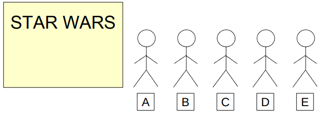
Person A is buying a ticket to see the next Star Wars movie. Persons B, C, D, and E are waiting in line to buy their tickets. The four of them are considered to be waiting in the queue. Since person A is in the process of buying his ticket, he is not considered to be part of the queue (i.e., he is not waiting). Person B is at the front, or head, of the queue, and will be the next person to be served. Person E is at the back, or end, of the queue, and must wait for everyone ahead to be served before being able to buy a ticket.
Queues are known as First-In, First-Out (FIFO) data structures. Assuming that no one breaks or cuts in line, the first person to enter the queue will be the first person to leave the queue (and thus be the first person served). Queues are extremely useful, both in the real-world and in computing, because they enable us to control access to scarce resources (such as Star Wars tickets in the example above).
The queue data structure models the behavior of real-world queues. It supports two primary operations: enqueue and dequeue. The enqueue operation is used to add a new item to the back of the queue. This operator is analogous to a person getting in line. The dequeue operation is used to remove an item from the front of the queue. This operation is analogous to having the person at the head of the line step forward to be served (and then of course to purchase grossly overpriced and over-buttered popcorn and a soda).
More formally, a queue is a list in which all insertions take place at one end, the back of the queue, and all deletions take place at the opposite end, the front (or head) of the queue. The basic queue data structure does not allow the insertion or deletion of items from the middle. Thus, it does not support concepts like people breaking or cutting in line, or giving up and leaving because the line is too long.
Consider the following sequence of operations applied to an initially empty queue, and the resulting queue configurations. In order to help clearly distinguish between the behavior of stacks verses queues, the same data presented in the (numeric) stack example above is used (along with the same pattern of operations applied to the structure). Notice that, even though the order of operations is the same in both of these examples, the contents of the two structures is quite different:
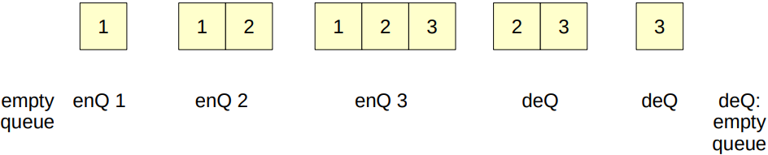
Here is a recap of terminology associated with stacks and queues:
| Term | Definition |
|---|---|
| Item | An element within the stack or queue that contains a value |
| Term | Definition |
|---|---|
| Push | Operation to add an item to the top of the stack |
| Pop | Operation to remove (and return) the item at the top of the stack |
| Top | Always refers to the top item in the stack |
| Term | Definition |
|---|---|
| Enqueue | Operation to add an item to the back of the queue |
| Dequeue | Operation to remove (and return) the item at the back of the queue |
| Front | Always refers to the front item in the queue |
| Back | Always refers to the back item in the queue |
Trees
Although there are many different types of tree-like data structures, we will focus on the binary tree in this lesson. First, let’s recall the various searching algorithms that were discussed in previous lessons. One in particular was especially efficient on sorted data: the binary search. The binary search works well because it effectively halves the search space with each comparison. The strategy is to continuously pick the middle value in a portion of the list making up half of what is left to search through. Initially, the middle of the list is picked. If the specified value is not found, then the half of the list that it cannot be contained within is discarded, and the process repeats with the other half of the list. This idea of halving the search space with a single comparison is the foundation for the binary tree. Earlier, you learned that linked lists were made up of nodes that point to other nodes in a linear or sequential fashion. These other nodes could be considered neighbors. Reaching the nodes in a linked list is performed by following the link component of each node until the tail of the list is reached. One could maintain a sorted linked list and implement the binary search, for example. Binary trees are also made up of nodes; however, instead of a node containing a link to some next neighbor node, each node in a binary tree contains two link components. These link components are known as the node’s children. This represents a different relationship between nodes.
Perhaps it is best to see what a tree actually looks like for reference:
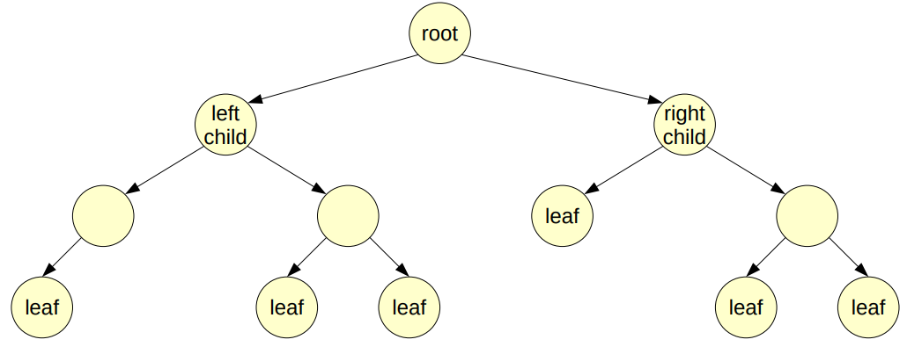
The top node in the tree is known as the root of the tree. In a binary tree, each node has up to two children. In the tree above, the root node has two children (one to the left, and one to the right – which is usually where we place them). In turn, these two children have children of their own. This can continue many times; however, at some point there will be nodes at the bottom of the tree that do not have children. These nodes are known as leaf nodes. Collectively, they are referred to as the leaves of the tree.
Why is this data structure called a binary tree? Well, if we were to turn the image above upside-down, it would look kind of like a real tree with a root at the bottom that splits into branches. Each branch splits into more, and so on, until the leaves are reached. It is called a binary tree because each node in the tree has, at most, two children. As branches are followed down the tree, the tree repeatedly splits into two halves, much like the process behind the binary search.
Sometimes it is useful to only consider parts of the tree. These parts are known as subtrees:
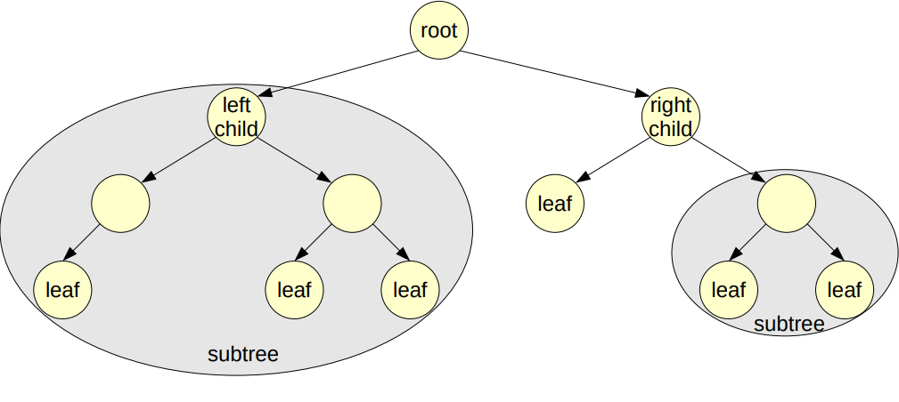
Although there is only a single root in a binary tree (always the node at the top of the tree), each subtree can be said to have a node that serves as its root. For example, the node labeled “left child” in the tree above can be said to be the root of the shaded subtree on the left.
The nodes in a binary tree are arranged in levels. A level can be said to be a horizontal slice of the binary tree. In the tree above, for example, the nodes labeled “left child” and “right child” are at the same level. In fact, they are at level 1. The root is at level 0. For a binary tree that is balanced (i.e., one that isn’t lopsided with too many extra nodes on any side), the number of levels is a function of the number of nodes. In a binary tree containing n nodes, there can be, at most, \(⌈log_2n ⌉\) levels. Intuitively, this makes sense since each level down the tree splits that part of the tree in half. In the tree above, there are 12 nodes; thus, there can be at most \(⌈log_212⌉=⌈3.58⌉=4\) . In fact, there are four levels in the tree!
The most useful binary trees implement an internal ordering of the nodes. Ordered binary trees are binary trees that abide by the rule that, given any node, the values of all children in the left subtree are less than the value of the node. Similarly, the values of all children in the right subtree are greater than (or sometimes greater than or equal to) the value of the node. This is also referred to as a binary search tree. Here is an example of an ordered binary tree:
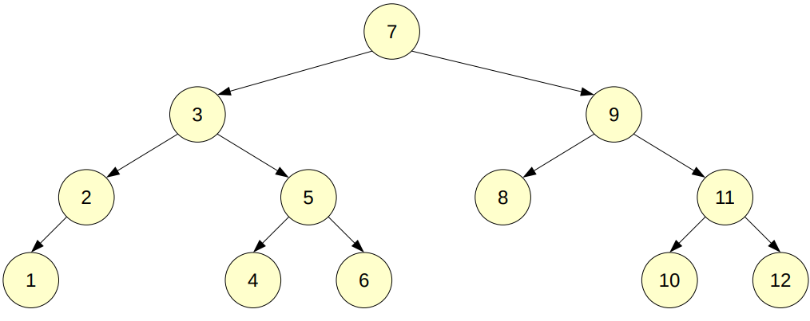
Notice that, for any node in the tree, the values of all children in its left subtree are less than the value of the node. Similarly, the values of all children in its right subtree are greater than the value of the node. For example, the values of all nodes to the left of the root are all less than seven, and the values of all nodes to the right of the root are all greater than 7.
If we were to place all nodes at the same level (i.e., all next to each other) and remove all links to children, this binary tree would look very much like a sorted array:
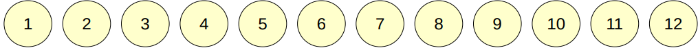
Notice that we can easily implement a binary search! An ordered binary tree actually works very much the same way. To search for a value, we begin at the root and compare its value to the desired value. If the desired value is less than the value of the root, we follow the link to the left and continue. If the desired value is greater than the value of the root, we follow the link to the right and continue. This exactly replicates the behavior of the binary search. If we find a node that is equal to the desired value, then the search is successful. If we reach a leaf node that is not equal to the desired value, then the search is unsuccessful.
An interesting aspect of the binary tree is that we can use an array to represent one in memory. The root of the tree is placed at the first position in the array (i.e., at index 0). The children of any node are easily found as follows: • The left child of a node at index i is at index \(2i+1\) ; • The right child of a node at index i is at index \(2i+2\) ; and • The parent of a node at index i is at index \(⌊(i−1)/2⌋\) . Take a look at the previous tree again:
This tree can be represented by an array as follows:
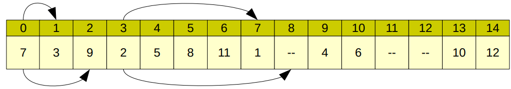
The arrows are there to illustrate a few of the nodes and their children. For example, the root node is at index 0. Its children are at indexes \(2(0)+1=1\) and \(2(0)+2=2\) . This is illustrated by the arrows pointing from the root node in the array. As another example, the children of the node containing the value 2 (which is at index 3) are at indexes \(2(3)+1=7\) and \(2(3)+2=8\) . Nodes with missing children are still included in the array (i.e., space is left for the missing children). As a final example, the parent of the node containing the value 6 (which is at index 10) is at index \(⌊(10−1)/2⌋=⌊9/2⌋=⌊4.5⌋=4\). These are all confirmed in the tree above.
Here is a recap of terminology associated with trees:
| Term | Definition |
|---|---|
| Binary Tree | A tree where each node has at most two children |
| Node | An element of a tree that contains data and references to all child nodes |
| Root | Always refers to the topmost node |
| Children | Nodes attached to a parent |
| Parent | Any node with children |
| Leaf | A node that does not have any children (opposite of parent) |
| Subtree | A subset of attached nodes within a tree. The topmost node of a subtree forms the root of that subtree (or a “subroot” of the entire tree) |
| Level | Starting at 0 for the root, the level of a node is how far down the tree that node is |
| Balanced | A tree whose maximum level is, at most, log base 2 of the number of nodes within the tree |
| Ordered Binary Tree | A binary tree with the extra property of having smaller values to the left and larger values to the right |